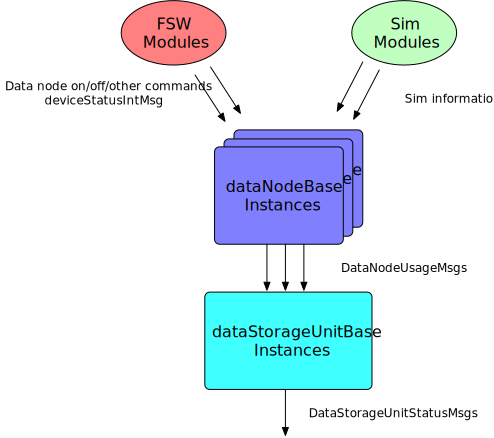
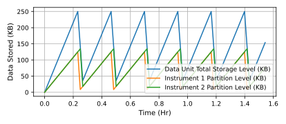
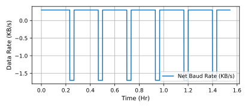

scenarioDataDemo
Overview
This is an illustration of how to use onboard data management modules to perform analysis of onboard data generated by instruments, stored by computers, and downlinked by transmittters.
This scenario is intended to provide both an overview and a concrete demonstration of the features and interface of the onboardDataHandling group of modules, which represent Basilisk’s low-fidelity data system modeling functionality. Specifically, onboardDataHandling modules are intended to provide three major features:
Computation of data generated by instruments;
Computation of data transmitted by onboard transmitters;
Computation of the sum of data stored onboard the spacecraft.
The script is found in the folder basilisk/examples and executed by using:
python3 scenarioDataDemo.py
The onboardDataHandling subsystem consists of two kinds of Basilisk simModules: Module: dataStorageUnitBase (which is used to represent data storage units, and serves as the heart of the subsystem) and Module: dataNodeBase (which is used to represent system components that consume or generate data). A conceptual diagram of these classes and their interfaces to each other and the rest of Basilisk is shown in the figure below.
{kind=link}
In general, this system can be configured using the following process:
Create and configure a set of dataNodeBase modules to represent data system sources and sinks, including their
nodeDataOutMsgattributes;Create and configure a Module: dataStorageUnitBase instance;
Use the
addDataNodeToModel()method from the Module: dataStorageUnitBase on thenodeDataOutMsgyou configured in step 1 to link the power nodes to the Module: dataStorageUnitBase instanceRun the simulation.
One version of this process is demonstrated here using methods that are described in other scenarios. Three onboardDataHandling modules are created: a Module: partitionedStorageUnit, a Module: simpleInstrument, and a Module: simpleTransmitter.
When the simulation completes, the following plots are shown to demonstrate the data stored, generated, and downlinked.
 